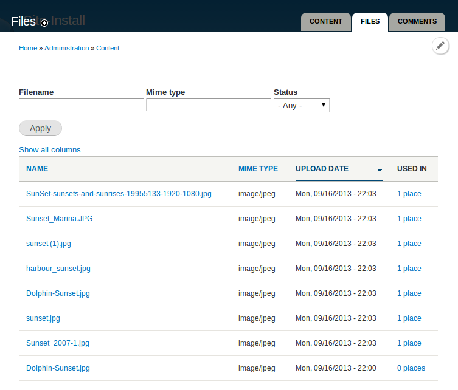
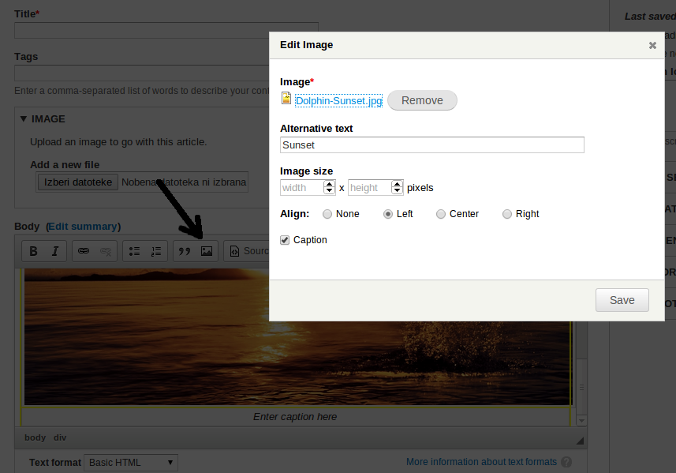
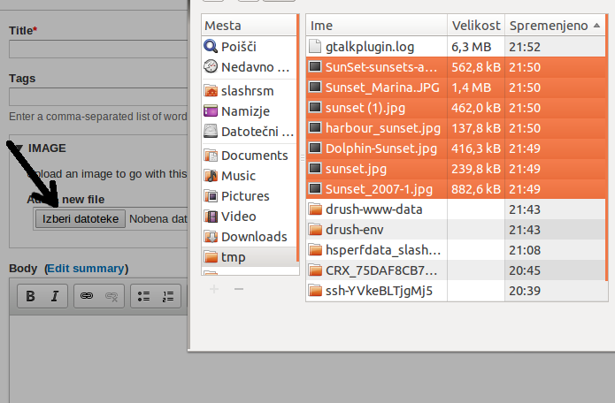

Joys of D7...
Media, Scald, Asset, .... works but we keep complaining
Basic concepts discussion
There are still some disagreements... https://groups.drupal.org/node/384813
Ease of use
Multi-upload, intiutive library, Wysiwyg integration, drag-and-drop, ...
Pluggable framework
Ecosystem of decoupled components that know how to work together.
Deliver basic components ASAP
Basic components should be available very early in the D8 production life-cycle
Use existing tools
Entity API, Field API, Plugins, ...
Non file-centric storage components
Local files are only a subset of all media.
2 (strong) Summer of Code proposals
- WYSIWYG entity embed
- Migrate integration, editorial experience, display configuration and YouTube/Vimeo integration."
We need help!
This is not going to magically happen. We need your help in order to succeed.
We need people of various expertise
- frontend
- UX
- interface design
- backend
- project mgmt
- ideas, past experience
- You name it!